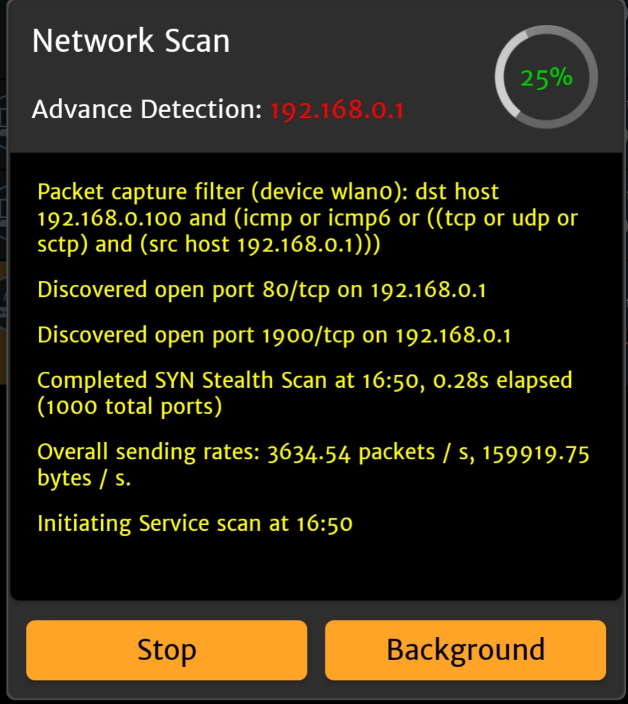
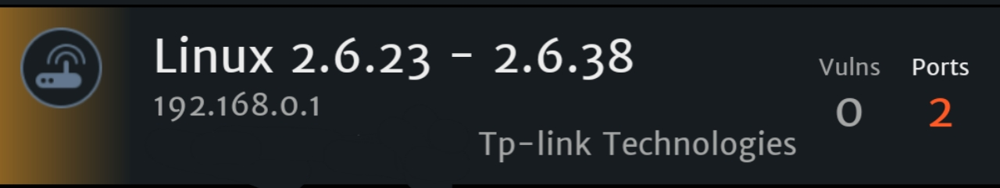

Mitm атака
Перехват информации
Intercepter-NG
Intercepter-NG — мощнейший инструмент для перехвата трафика, паролей и т.д.(Больше) Он есть как для ПК, так и для мобильных устройств.(Скачать) Чтобы описать техническую суть этой атаки, представьте себе локальную сеть. Такой локальной сетью могут быть несколько компьютеров в вашей квартире, которые подключены к роутеру. При этом неважно, подключены они по проводу или по Wi-Fi. Роутер получает запросы от компьютеров, перенаправляет их, например, в Интернет, а полученные ответы возвращает обратно компьютерам, отправившим запросы. В данной ситуации роутер является шлюзом.
Благодаря атаке, называемой ARP спуфингом, компьютер начинает считать шлюзом не роутер, а компьютер атакующего. Атакующий получает запросы от «жертвы» и передаёт их в пункт назначения (например, запрашивает содержимое веб-сайта в Интернете), получив ответ от пункта назначения, он направляет его «жертве». В этой ситуации атакующий становится посредником – отсюда другое название атаки человек-посередине – «атака посредника».
1.Для начала нажмём значек радара - для обнаружение большинства устройств нам нужно просканировать 3 раза.
2. После мы выбираем нужные, или все устройства, и нажимаем далее
3.Нас перекинуло в консольный режим!
Давайте теперь подробнее что мы можем делать, и за что отвечает каждая вкладка:
Консольный режим
Здесь мы запускаем нашу атаку, видим все запросы и действия над жертвой
Здесь мы можем увидеть все запросы к роутеры в сети
Здесь будут собраны все куки(http) по которым можно будет легко перейти, и выполнять действия от имени жертвы
Здесь находятся самые интересные штучки)
SSl trip - пытается перенаправить жертву с https на http
Coоkie Killer - "убивает" куки, что призводит к выходу из аккаунта и т.д.
Forced DL - принудительно пытается загрузить файл на устройство жертвы
Inject chat - пообщайтесь с жертвой)
Dns spoofing - поменяйте все запросы к днс на свои
Http injection - замените страницу, картинку, скрипт, стиль, на свой!
Защита:
- Не использовать публичные сети
- Регулярно проверять список устройств в вашей сети
Скан уязвимостей
Zanti
Zanti - инструмент от Zimperium для сканирование сети, а так же сканер уязвимостей устройств используя nmap, выдаёт красивые отчёты!
Начинаем сканировать сеть выбирая все пункты  После нам выдаст какие есть устройства в сети и есть ли уязвимостиДалее мы можем сами решить что делать с данным устройством, например перехват паролей
Защита:
-
НЕ вводить информацию на сайтах http:// ftp:// и т.д. нигде кроме своей сети!
Время от времени проверять сеть на наличие посторонних устройств!
Перехват трафика
MITMf
Этот фреймворк содержит встроенные сервера SMB, HTTP и DNS, которые могут управляться и использоваться множеством плагинов, он также содержит модифицированную версию SSLStrip proxy, которая позволяет HTTP модификацию и частичный обход HSTS. Конфигурационный файл может быть отредактирован на лету.MITMf будет захватывать FTP, IRC, POP, IMAP, Telnet, SMTP, SNMP (community strings), NTLMv1/v2 (все поддерживаемые протоколы вроде HTTP, SMB, LDAP и т.д.) и учётные данные Kerberos с использованием Net-Creds, который запускается при старте программы.
Пример запуска программы:
python mitmf.py -i enp3s0 --spoof --arp --gateway ip роутера
ARP poison на всю подсеть со шлюзом 192.168.1.1 используя плагин Spoof далее мы можем использовать Scapy для редактирования запросов
- Не вводить важные данные в публичных сетях